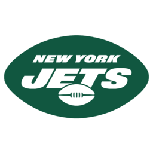

Welcome to My New York Jets Fan Page!
Featuring a 2022
mock draft,
PFF.com

Visit NFL website
.
Zach Wilson Rookie Season
.
2021 AFC East Standings
Bills
Patriots
Dolphins
Jets
2022 Mock Draft
OL Ikem Ekwonu
WR Treylon Burks
OL Zion Johnson
TE Trey McBride
CB Jalen Pitre
WR Christian Watson
LB Troy Anderson
CB Tariq Woolen
Free Agents
Learn more here
Age
Position
Name
26
FS
Marcus Williams
29
TE
Hayden Hurst
27
WR
Chris Godwin
Jets 2021 captains